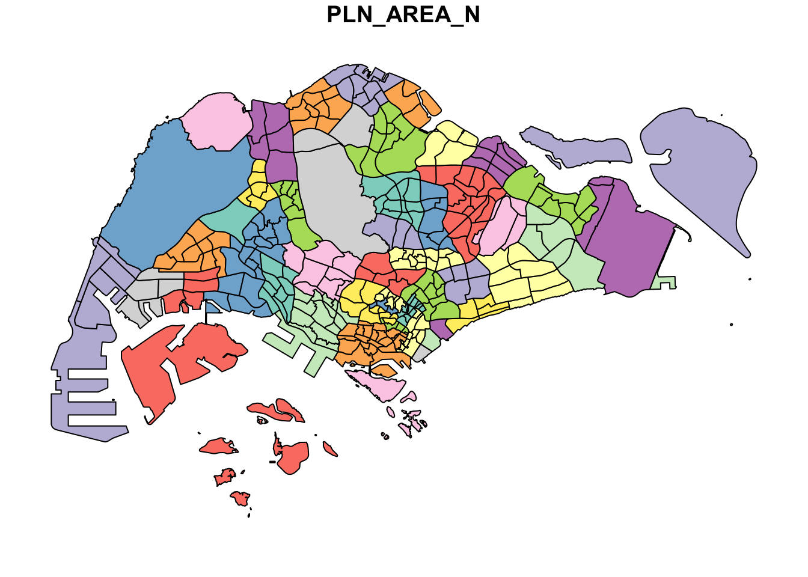
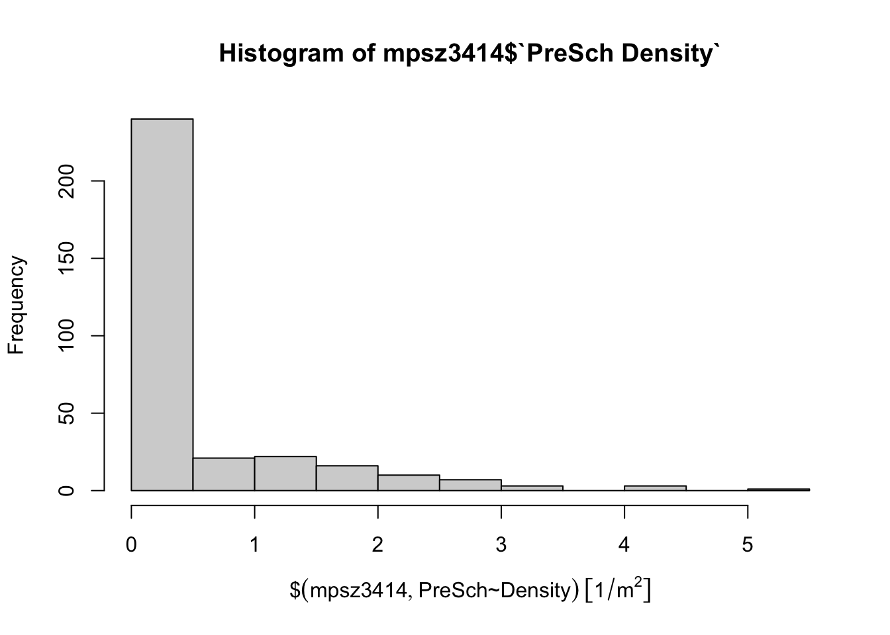
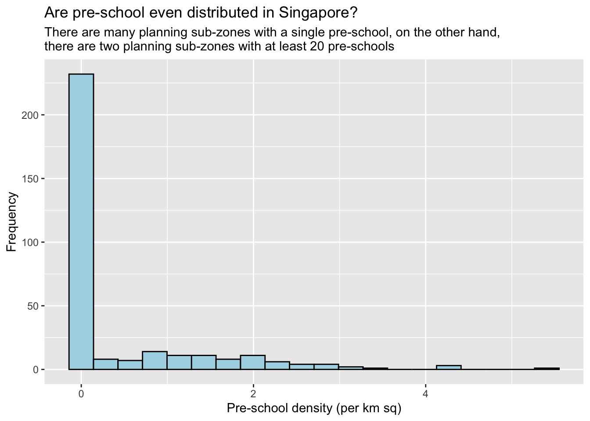
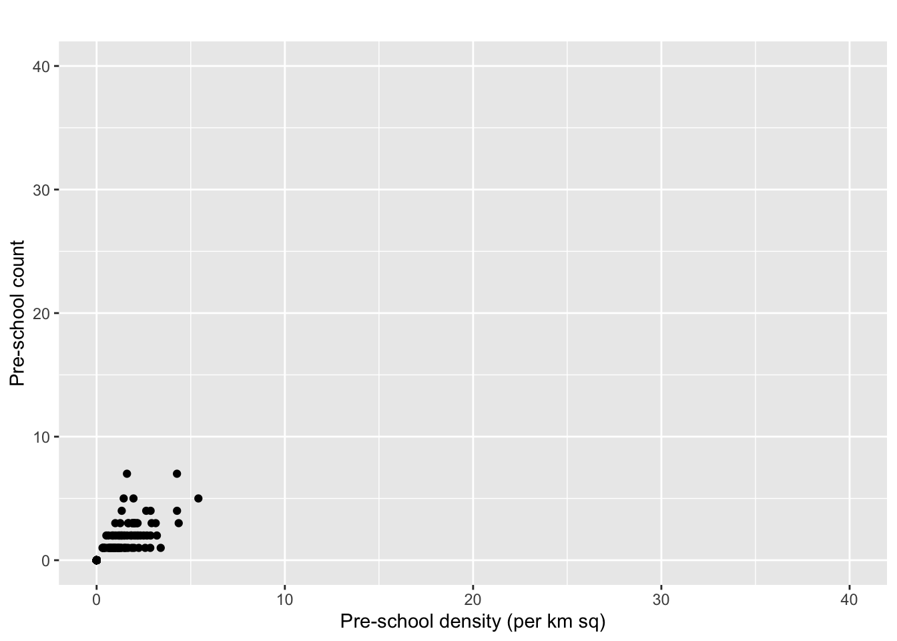

pacman::p_load(tidyverse, sf)Hands-on Exercise 1: Geospatial Data Wrangling with R! 🥳
1.1 Getting Started
1.1.1 Installing and loading R packages
In this section, I will install and load tidyverse and sf packages.
1.2 Importing Geospatial Data
1.2.1 Importing a polygon feature data in shapefile format
MP14_SUBZONE_WEB_PL is a polygon feature layer in ESRI shapefile format.
mpsz <- st_read(dsn = "data/geospatial",
layer = "MP14_SUBZONE_WEB_PL")Reading layer `MP14_SUBZONE_WEB_PL' from data source
`/Users/yashica/Desktop/xtc0/IS415-GAA/Hands-on_Ex/Hands-on_Ex01/data/geospatial'
using driver `ESRI Shapefile'
Simple feature collection with 323 features and 15 fields
Geometry type: MULTIPOLYGON
Dimension: XY
Bounding box: xmin: 2667.538 ymin: 15748.72 xmax: 56396.44 ymax: 50256.33
Projected CRS: SVY211.2.2 Importing a polyline feature data in shapefile format
cyclingpath = st_read(dsn = "data/geospatial",
layer = "CyclingPathGazette")Reading layer `CyclingPathGazette' from data source
`/Users/yashica/Desktop/xtc0/IS415-GAA/Hands-on_Ex/Hands-on_Ex01/data/geospatial'
using driver `ESRI Shapefile'
Simple feature collection with 2248 features and 2 fields
Geometry type: MULTILINESTRING
Dimension: XY
Bounding box: xmin: 11854.32 ymin: 28347.98 xmax: 42626.09 ymax: 48948.15
Projected CRS: SVY211.2.3 Importing GIS data in kml format
preschool = st_read("data/geospatial/sportsg-dus-sport-facilities-kml.kml")Reading layer `SPORTSG_DUS_SPORT_FACILITIES' from data source
`/Users/yashica/Desktop/xtc0/IS415-GAA/Hands-on_Ex/Hands-on_Ex01/data/geospatial/sportsg-dus-sport-facilities-kml.kml'
using driver `KML'
Simple feature collection with 183 features and 2 fields
Geometry type: POINT
Dimension: XYZ
Bounding box: xmin: 103.6872 ymin: 1.274962 xmax: 103.9628 ymax: 1.456667
z_range: zmin: 0 zmax: 0
Geodetic CRS: WGS 841.3 Checking the Content of A Simple Feature Data Frame
1.3.1 Working with st_geometry()
st_geometry(mpsz)Geometry set for 323 features
Geometry type: MULTIPOLYGON
Dimension: XY
Bounding box: xmin: 2667.538 ymin: 15748.72 xmax: 56396.44 ymax: 50256.33
Projected CRS: SVY21
First 5 geometries:1.3.2 Working with glimpse()
glimpse(mpsz)Rows: 323
Columns: 16
$ OBJECTID <int> 1, 2, 3, 4, 5, 6, 7, 8, 9, 10, 11, 12, 13, 14, 15, 16, 17, …
$ SUBZONE_NO <int> 1, 1, 3, 8, 3, 7, 9, 2, 13, 7, 12, 6, 1, 5, 1, 1, 3, 2, 2, …
$ SUBZONE_N <chr> "MARINA SOUTH", "PEARL'S HILL", "BOAT QUAY", "HENDERSON HIL…
$ SUBZONE_C <chr> "MSSZ01", "OTSZ01", "SRSZ03", "BMSZ08", "BMSZ03", "BMSZ07",…
$ CA_IND <chr> "Y", "Y", "Y", "N", "N", "N", "N", "Y", "N", "N", "N", "N",…
$ PLN_AREA_N <chr> "MARINA SOUTH", "OUTRAM", "SINGAPORE RIVER", "BUKIT MERAH",…
$ PLN_AREA_C <chr> "MS", "OT", "SR", "BM", "BM", "BM", "BM", "SR", "QT", "QT",…
$ REGION_N <chr> "CENTRAL REGION", "CENTRAL REGION", "CENTRAL REGION", "CENT…
$ REGION_C <chr> "CR", "CR", "CR", "CR", "CR", "CR", "CR", "CR", "CR", "CR",…
$ INC_CRC <chr> "5ED7EB253F99252E", "8C7149B9EB32EEFC", "C35FEFF02B13E0E5",…
$ FMEL_UPD_D <date> 2014-12-05, 2014-12-05, 2014-12-05, 2014-12-05, 2014-12-05…
$ X_ADDR <dbl> 31595.84, 28679.06, 29654.96, 26782.83, 26201.96, 25358.82,…
$ Y_ADDR <dbl> 29220.19, 29782.05, 29974.66, 29933.77, 30005.70, 29991.38,…
$ SHAPE_Leng <dbl> 5267.381, 3506.107, 1740.926, 3313.625, 2825.594, 4428.913,…
$ SHAPE_Area <dbl> 1630379.27, 559816.25, 160807.50, 595428.89, 387429.44, 103…
$ geometry <MULTIPOLYGON [m]> MULTIPOLYGON (((31495.56 30..., MULTIPOLYGON (…1.3.3 Working with head()
head(mpsz, n=5) Simple feature collection with 5 features and 15 fields
Geometry type: MULTIPOLYGON
Dimension: XY
Bounding box: xmin: 25867.68 ymin: 28369.47 xmax: 32362.39 ymax: 30435.54
Projected CRS: SVY21
OBJECTID SUBZONE_NO SUBZONE_N SUBZONE_C CA_IND PLN_AREA_N
1 1 1 MARINA SOUTH MSSZ01 Y MARINA SOUTH
2 2 1 PEARL'S HILL OTSZ01 Y OUTRAM
3 3 3 BOAT QUAY SRSZ03 Y SINGAPORE RIVER
4 4 8 HENDERSON HILL BMSZ08 N BUKIT MERAH
5 5 3 REDHILL BMSZ03 N BUKIT MERAH
PLN_AREA_C REGION_N REGION_C INC_CRC FMEL_UPD_D X_ADDR
1 MS CENTRAL REGION CR 5ED7EB253F99252E 2014-12-05 31595.84
2 OT CENTRAL REGION CR 8C7149B9EB32EEFC 2014-12-05 28679.06
3 SR CENTRAL REGION CR C35FEFF02B13E0E5 2014-12-05 29654.96
4 BM CENTRAL REGION CR 3775D82C5DDBEFBD 2014-12-05 26782.83
5 BM CENTRAL REGION CR 85D9ABEF0A40678F 2014-12-05 26201.96
Y_ADDR SHAPE_Leng SHAPE_Area geometry
1 29220.19 5267.381 1630379.3 MULTIPOLYGON (((31495.56 30...
2 29782.05 3506.107 559816.2 MULTIPOLYGON (((29092.28 30...
3 29974.66 1740.926 160807.5 MULTIPOLYGON (((29932.33 29...
4 29933.77 3313.625 595428.9 MULTIPOLYGON (((27131.28 30...
5 30005.70 2825.594 387429.4 MULTIPOLYGON (((26451.03 30...1.4 Plotting the Geospatial Data
plot(mpsz)
plot(st_geometry(mpsz))
plot(mpsz["PLN_AREA_N"])
1.5 Working with Projection
Map projection is an important property of a geospatial data. In order to perform geoprocessing using two geospatial data, we need to ensure that both geospatial data are projected using similar coordinate system.
In this section, you will learn how to project a simple feature data frame from one coordinate system to another coordinate system. The technical term of this process is called projection transformation.
1.5.1 Assigning EPSG code to a simple feature data frame
st_crs(mpsz)Coordinate Reference System:
User input: SVY21
wkt:
PROJCRS["SVY21",
BASEGEOGCRS["SVY21[WGS84]",
DATUM["World Geodetic System 1984",
ELLIPSOID["WGS 84",6378137,298.257223563,
LENGTHUNIT["metre",1]],
ID["EPSG",6326]],
PRIMEM["Greenwich",0,
ANGLEUNIT["Degree",0.0174532925199433]]],
CONVERSION["unnamed",
METHOD["Transverse Mercator",
ID["EPSG",9807]],
PARAMETER["Latitude of natural origin",1.36666666666667,
ANGLEUNIT["Degree",0.0174532925199433],
ID["EPSG",8801]],
PARAMETER["Longitude of natural origin",103.833333333333,
ANGLEUNIT["Degree",0.0174532925199433],
ID["EPSG",8802]],
PARAMETER["Scale factor at natural origin",1,
SCALEUNIT["unity",1],
ID["EPSG",8805]],
PARAMETER["False easting",28001.642,
LENGTHUNIT["metre",1],
ID["EPSG",8806]],
PARAMETER["False northing",38744.572,
LENGTHUNIT["metre",1],
ID["EPSG",8807]]],
CS[Cartesian,2],
AXIS["(E)",east,
ORDER[1],
LENGTHUNIT["metre",1,
ID["EPSG",9001]]],
AXIS["(N)",north,
ORDER[2],
LENGTHUNIT["metre",1,
ID["EPSG",9001]]]]Using this function, we see that the ESPG code indicated is incorrect. For “SVY21” it should be 3414 but it’s showing 9001.
mpsz3414 <- st_set_crs(mpsz, 3414)To assign the correct EPSG (European Petroleum Survey Group) code to mpsz data frame, st_set_crs() of sf package is used as shown in the code chunk above.
st_crs(mpsz3414)Coordinate Reference System:
User input: EPSG:3414
wkt:
PROJCRS["SVY21 / Singapore TM",
BASEGEOGCRS["SVY21",
DATUM["SVY21",
ELLIPSOID["WGS 84",6378137,298.257223563,
LENGTHUNIT["metre",1]]],
PRIMEM["Greenwich",0,
ANGLEUNIT["degree",0.0174532925199433]],
ID["EPSG",4757]],
CONVERSION["Singapore Transverse Mercator",
METHOD["Transverse Mercator",
ID["EPSG",9807]],
PARAMETER["Latitude of natural origin",1.36666666666667,
ANGLEUNIT["degree",0.0174532925199433],
ID["EPSG",8801]],
PARAMETER["Longitude of natural origin",103.833333333333,
ANGLEUNIT["degree",0.0174532925199433],
ID["EPSG",8802]],
PARAMETER["Scale factor at natural origin",1,
SCALEUNIT["unity",1],
ID["EPSG",8805]],
PARAMETER["False easting",28001.642,
LENGTHUNIT["metre",1],
ID["EPSG",8806]],
PARAMETER["False northing",38744.572,
LENGTHUNIT["metre",1],
ID["EPSG",8807]]],
CS[Cartesian,2],
AXIS["northing (N)",north,
ORDER[1],
LENGTHUNIT["metre",1]],
AXIS["easting (E)",east,
ORDER[2],
LENGTHUNIT["metre",1]],
USAGE[
SCOPE["Cadastre, engineering survey, topographic mapping."],
AREA["Singapore - onshore and offshore."],
BBOX[1.13,103.59,1.47,104.07]],
ID["EPSG",3414]]1.5.2 Transforming the projection of preschool from wgs84 to svy21
st_geometry(preschool)Geometry set for 183 features
Geometry type: POINT
Dimension: XYZ
Bounding box: xmin: 103.6872 ymin: 1.274962 xmax: 103.9628 ymax: 1.456667
z_range: zmin: 0 zmax: 0
Geodetic CRS: WGS 84
First 5 geometries:We can see that the preschool data is in wgs84 coordinate system. Geographic coordinate system is not appropriate if the analysis need to use distance or/and area measurements.
Time to reproject {r}preschool from one coordinate system to another.
preschool3414 <- st_transform(preschool,
crs = 3414)Let’s display the content of preschool3414 sf data frame as shown below.
st_geometry(preschool3414)Geometry set for 183 features
Geometry type: POINT
Dimension: XYZ
Bounding box: xmin: 11739.27 ymin: 28604.3 xmax: 42410.51 ymax: 48696.35
z_range: zmin: 0 zmax: 0
Projected CRS: SVY21 / Singapore TM
First 5 geometries:YAYY we have successfully converted preschool to preschool3414 (from wgs84 geographic coordinate system to svy21 projected coordinate system - suitable for distance-related measurements).
Notice that it is in svy21 projected coordinate system now. Furthermore, if you refer to Bounding box:, the values are greater than 0-360 range of decimal degree commonly used by most of the geographic coordinate systems.
1.6 Importing and Converting An Aspatial Data
1.6.1 Importing the Aspatial Data
listings <- read_csv("data/aspatial/listings.csv")list(listings) [[1]]
# A tibble: 4,161 × 18
id name host_id host_…¹ neigh…² neigh…³ latit…⁴ longi…⁵ room_…⁶ price
<dbl> <chr> <dbl> <chr> <chr> <chr> <dbl> <dbl> <chr> <dbl>
1 50646 Pleasan… 227796 Sujatha Centra… Bukit … 1.33 104. Privat… 80
2 71609 Ensuite… 367042 Belinda East R… Tampin… 1.35 104. Privat… 145
3 71896 B&B Ro… 367042 Belinda East R… Tampin… 1.35 104. Privat… 85
4 71903 Room 2-… 367042 Belinda East R… Tampin… 1.35 104. Privat… 85
5 275344 15 mins… 1439258 Kay Centra… Bukit … 1.29 104. Privat… 49
6 289234 Booking… 367042 Belinda East R… Tampin… 1.34 104. Privat… 184
7 294281 5 mins … 1521514 Elizab… Centra… Newton 1.31 104. Privat… 79
8 324945 Cozy Bl… 1439258 Kay Centra… Bukit … 1.29 104. Privat… 49
9 330089 Cozy Bl… 1439258 Kay Centra… Bukit … 1.29 104. Privat… 55
10 330095 10 mins… 1439258 Kay Centra… Bukit … 1.29 104. Privat… 55
# … with 4,151 more rows, 8 more variables: minimum_nights <dbl>,
# number_of_reviews <dbl>, last_review <date>, reviews_per_month <dbl>,
# calculated_host_listings_count <dbl>, availability_365 <dbl>,
# number_of_reviews_ltm <dbl>, license <chr>, and abbreviated variable names
# ¹host_name, ²neighbourhood_group, ³neighbourhood, ⁴latitude, ⁵longitude,
# ⁶room_typeThe code chunk above shows list() of Base R instead of glimpse() is used to do the job.
The output reveals that there are 4161 rows and 18 columns.
Two useful fields we are going to use in the next phase are latitude and longitude. Note that they are in decimal degree format. As a best guess, we will assume that the data is in wgs84 Geographic Coordinate System.
1.6.2 Creating a simple feature data frame from an aspatial data frame
listings_sf <- st_as_sf(listings,
coords = c("longitude", "latitude"),
crs=4326) %>%
st_transform(crs = 3414)The code chunk above converts listing data frame into a simple feature data frame by using st_as_sf() of sf packages.
Things to learn from the arguments above:
- coords argument requires you to provide the column name of the x-coordinates first then followed by the column name of the y-coordinates.
- crs argument requires you to provide the coordinates system in epsg format. EPSG: 4326 is wgs84 Geographic Coordinate System and EPSG: 3414 is Singapore SVY21 Projected Coordinate System. You can search for other country’s epsg code by referring to epsg.io.
- %>% is used to nest st_transform() to transform the newly created simple feature data frame into svy21 projected coordinates system.
glimpse(listings_sf)Rows: 4,161
Columns: 17
$ id <dbl> 50646, 71609, 71896, 71903, 275344, 289…
$ name <chr> "Pleasant Room along Bukit Timah", "Ens…
$ host_id <dbl> 227796, 367042, 367042, 367042, 1439258…
$ host_name <chr> "Sujatha", "Belinda", "Belinda", "Belin…
$ neighbourhood_group <chr> "Central Region", "East Region", "East …
$ neighbourhood <chr> "Bukit Timah", "Tampines", "Tampines", …
$ room_type <chr> "Private room", "Private room", "Privat…
$ price <dbl> 80, 145, 85, 85, 49, 184, 79, 49, 55, 5…
$ minimum_nights <dbl> 92, 92, 92, 92, 60, 92, 92, 60, 60, 60,…
$ number_of_reviews <dbl> 18, 20, 24, 47, 14, 12, 133, 17, 12, 3,…
$ last_review <date> 2014-12-26, 2020-01-17, 2019-10-13, 20…
$ reviews_per_month <dbl> 0.18, 0.15, 0.18, 0.34, 0.11, 0.10, 1.0…
$ calculated_host_listings_count <dbl> 1, 6, 6, 6, 44, 6, 7, 44, 44, 44, 6, 7,…
$ availability_365 <dbl> 365, 340, 265, 365, 296, 285, 365, 181,…
$ number_of_reviews_ltm <dbl> 0, 0, 0, 0, 1, 0, 0, 3, 2, 0, 1, 0, 0, …
$ license <chr> NA, NA, NA, NA, "S0399", NA, NA, "S0399…
$ geometry <POINT [m]> POINT (22646.02 35167.9), POINT (…1.9 Geoprocessing with sf package
Besides providing functions to handling (i.e. importing, exporting, assigning projection, transforming projection etc) geospatial data, sf package also offers a wide range of geoprocessing (also known as GIS analysis) functions.
1.9.1 Buffering
The authority is planning to upgrade the exiting cycling path. To do so, they need to acquire 5 metres of reserved land on the both sides of the current cycling path. You are tasked to determine the extend of the land need to be acquired and their total area.
buffer_cycling <- st_buffer(cyclingpath,
dist=5, nQuadSegs = 30)st_buffer() of sf package is used to compute the 5-meter buffers around cycling paths.
buffer_cycling$AREA <- st_area(buffer_cycling)sum(buffer_cycling$AREA)1556978 [m^2]1.9.2 Point-in-polygon count
A pre-school service group want to find out the numbers of pre-schools in each Planning Subzone.
mpsz3414$`PreSch Count`<- lengths(st_intersects(mpsz3414, preschool3414))The code chunk above performs two operations at one go. Firstly, identify pre-schools located inside each Planning Subzone by using st_intersects(). Next, length() of Base R is used to calculate numbers of pre-schools that fall inside each planning subzone.
summary(mpsz3414$`PreSch Count`) Min. 1st Qu. Median Mean 3rd Qu. Max.
0.0000 0.0000 0.0000 0.5666 1.0000 7.0000 top_n(mpsz3414, 1, `PreSch Count`)Simple feature collection with 2 features and 16 fields
Geometry type: MULTIPOLYGON
Dimension: XY
Bounding box: xmin: 39655.33 ymin: 35966 xmax: 42940.57 ymax: 39726.28
Projected CRS: SVY21 / Singapore TM
OBJECTID SUBZONE_NO SUBZONE_N SUBZONE_C CA_IND PLN_AREA_N PLN_AREA_C
1 189 2 TAMPINES EAST TMSZ02 N TAMPINES TM
2 246 5 PASIR RIS DRIVE PRSZ05 N PASIR RIS PR
REGION_N REGION_C INC_CRC FMEL_UPD_D X_ADDR Y_ADDR SHAPE_Leng
1 EAST REGION ER 21658EAAF84F4D8D 2014-12-05 41122.55 37392.39 10180.62
2 EAST REGION ER 2B73597AF3F174F3 2014-12-05 42032.46 38988.22 5311.06
SHAPE_Area geometry PreSch Count
1 4339824 MULTIPOLYGON (((42196.76 38... 7
2 1639669 MULTIPOLYGON (((42832.87 38... 7To list the planning subzone with the most number of pre-school, the top_n() of dplyr package is used as shown in the code chunk above.
mpsz3414$Area <- mpsz3414 %>%
st_area()mpsz3414 <- mpsz3414 %>%
mutate(`PreSch Density` = `PreSch Count`/Area * 1000000)1.10 Explorotary Data Analysis (EDA)
In practice, many geospatial analytics start with Exploratory Data Analysis. In this section, you will learn how to use appropriate ggplot2 functions to create functional and yet truthful statistical graphs for EDA purposes.
Firstly, we will plot a histogram to reveal the distribution of PreSch Density. Conventionally, hist() of R Graphics will be used as shown in the code chunk below.
hist(mpsz3414$`PreSch Density`)
Although the syntax is very easy to use however the output is far from meeting publication quality. Furthermore, the function has limited room for further customisation.
ggplot(data=mpsz3414,
aes(x= as.numeric(`PreSch Density`)))+
geom_histogram(bins=20,
color="black",
fill="light blue") +
labs(title = "Are pre-school even distributed in Singapore?",
subtitle= "There are many planning sub-zones with a single pre-school, on the other hand, \nthere are two planning sub-zones with at least 20 pre-schools",
x = "Pre-school density (per km sq)",
y = "Frequency")
DIY: Using ggplot2 method, plot a scatterplot showing the relationship between Pre-school Density and Pre-school Count.
ggplot(data=mpsz3414,
aes(y = `PreSch Count`,
x= as.numeric(`PreSch Density`)))+
geom_point(color="black",
fill="light blue") +
xlim(0, 40) +
ylim(0, 40) +
labs(title = "",
x = "Pre-school density (per km sq)",
y = "Pre-school count")